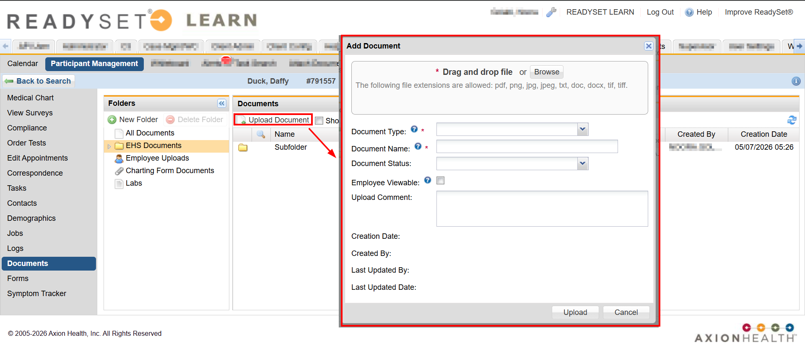
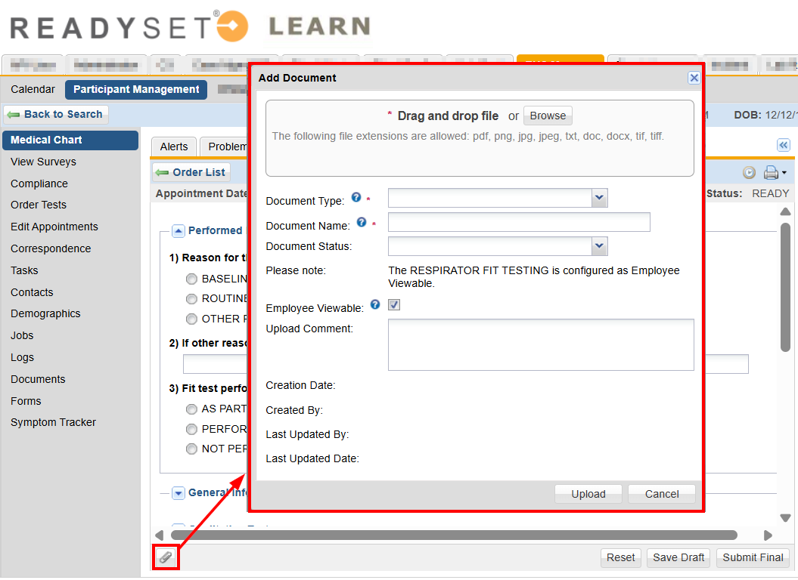
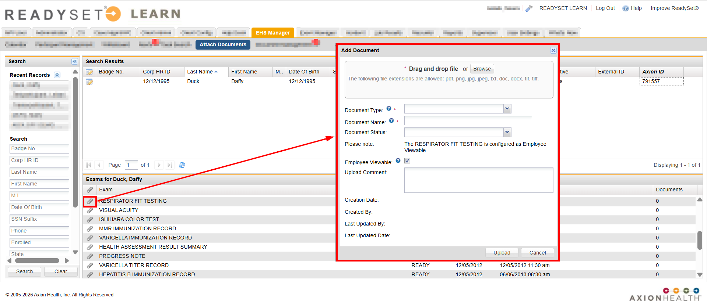
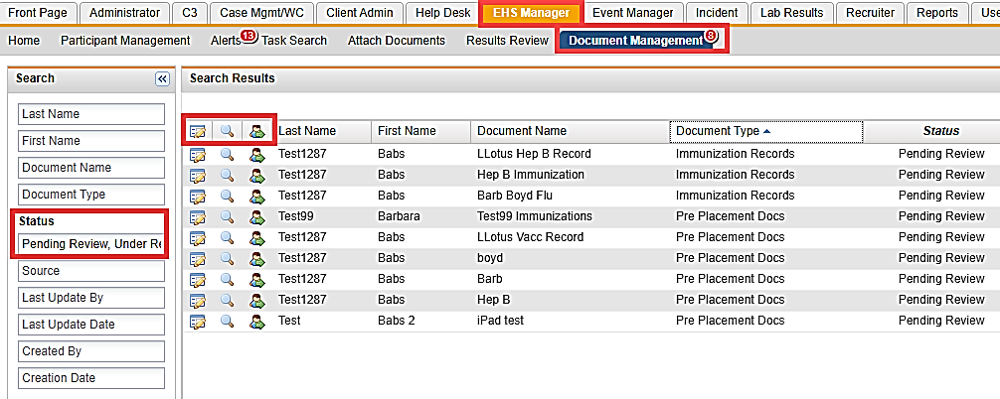
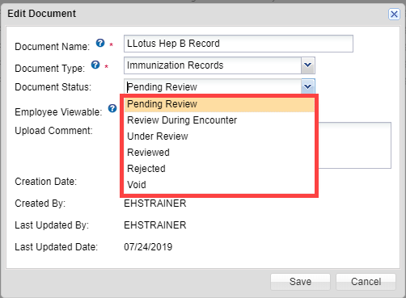
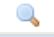
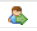
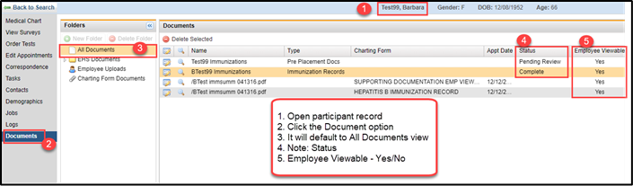

In Participant Management > Participant Record > Documents, you can view and manage documents in a participant record. The following folders are available by default:
All Documents – A comprehensive list of all attachments for this participant.
EHS Documents – Displays all folders and attachments uploaded to the Documents tab folder(s). Documents uploaded here can be employee-viewable or non-employee-viewable.
Employee Uploads – Attachments that have been uploaded by the participant in their My Health portal.
Charting Form Document – Attachments that have been uploaded to a specific charting form in the Medical Chart via the “paperclip” icon.
Uploading a Document from the Documents View
You can upload documents from the participant record Documents view by doing the following:
Open the participant record.
Click Documents.
Click the EHS Documents folder. You can also create subfolders organize documents.
Click Upload Document.
Click Browse to search for the file on your device or drag and drop the file into the Add Document window.
Choose the Document Type and Status.
Enter a name for the document and any additional upload comments.
Select whether the document should be viewable by the employee.
Click Upload.

Uploading a Document from a Chart
You can upload documents from a chart by doing the following:
Open the participant record.
Click Medical Chart.
Click Open Orders.
Open the charting form and complete the charting details.
Below the charting form, click the Attach Documents icon. The Manage Documents window opens.
Click Upload Document.
Click Browse to search for the file on your device or drag and drop the file into the Add Document window.
Choose the Document Type and Status.
Enter a name for the document and any additional upload comments.
Select whether the document should be viewable by the employee.
Click Upload.

Uploading a document from the Attach Documents View
You can upload documents from the participant record Documents view by doing the following:
On the EHS Manager tab, click Attach Documents.
Search for a participant and open the participant record.
Click the Attach Documents icon.
Click Browse to search for the file on your device or drag and drop the file into the Add Document window.
Choose the Document Type and Status.
Enter a name for the document and any additional upload comments.
Select whether the document should be viewable by the employee.
Click Upload.

Document Management in EHS Manager
The Document Management button provides a working list of all attached documents. The button has a red numbered alert when there are new documents uploaded that need to be processed. The default view is for attachments with a status of Pending Review and Under Review.

You can view or edit document detailsby clicking the Edit icon.

Document Name – Use a descriptive title followed by a date, e.g. MMR immunization 2019-03-01
Document Type – Specifies the type of document. The options are set up under Client Admin>Preferences.
Document Status:
Pending Review: This is the default status when an employee uploads a document. A user must review the document to make sure it is appropriate and accurately labeled.
Review During Encounter: An EHS user can set a document to this status to note that an EHS user must review the document when the participant comes in for their appointment.
Under Review: An EHS user can set a document to this status to let other EHS Managers know that the document is already being reviewed by a user.
Reviewed: The document has been reviewed by an EHS user and it is acceptable.
Rejected: The document is not acceptable: it is either unreadable, or not the document that needed to be uploaded.
Void: The document is no longer needed.
Employee Viewable – If checked, the participant can view the document in their My Health.
Upload Comment – A comment will display if entered by the participant.
You can view a document by clicking the View

icon. This will open the attached document in a separate tab.
You can jump to an employee by clicking the Jump to Employee

icon. You can then chart the information from the document in the appropriate charting form.
Workflow tips
When a user with EHS Manager view uploads a document, set the Document Status to "Reviewed" (if review is complete). This document will not display in the Document Management unless you select the Reviewed status.
The Document Management uploads. Example Flu documents
Open the document and review, this opens the document on a different tab in your browser allowing you to toggle between the document and ReadySet.
Jump to the Participant record and chart the information.
Return to the Document Management, update the Document Status as "Reviewed". Close the tab displaying the document.
Processing Employee Upload from the Participant Record
You can process employee document uploads from the participant record by doing the following:
Open the participant record.
Click Documents. The All Documents view opens.
Sort the view by the Status column to view any pending documents.

You can view or edit document detailsby clicking the Edit icon.